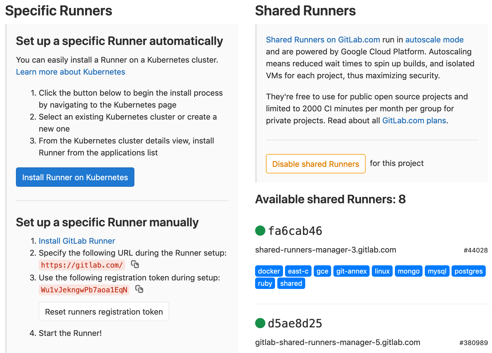

Gitlab
guillermo.guerrero{at}fr.fcm.travel{dot}com
June 5th, 2020
What is CI (Continuous Integration)?

What is CD?

Examples:
- Continuous delivery:
- Continuous deployment:

Hi Gitlab

From:
- Github
- Codeship (CI)
- Dockerhub
gitlab-ci.yml
image: "ruby:2.5"
before_script:
- apt-get update -qq && apt-get install -y -qq sqlite3 libsqlite3-dev nodejs
- ruby -v
- gem install bundler --no-document
- bundle install
rspec:
script:
- bundle exec rspec
rubocop:
script:
- bundle exec rubocop
Tags
- docker
- fcm_build
- fcm_deploy
- test
- feature_test
- ...
...
rspec:
tags:
- docker
- ruby
- postgres
script:
- bundle exec rspec
Workflows/pipelines
...
stages:
- linter
- test
- build
- deploy
rspec:
stage: test
script:
- bundle exec rspec

Cache/Artifacts
- Cache: job speed up
- Artifact: results
...
rspec:
cache:
paths:
- vendor/bundle/
artifacts:
when: always
paths:
- coverage/
- tmp/capybara/
script:
- bundle exec rspec
https://gitlab.com/3mundi/hellofcm/-/jobs/579150199
Gitlab runners
 https://gitlab.com/3mundi/hellofcm/-/settings/ci_cdGitlab executors
https://docs.gitlab.com/runner/install- SSH
- Shell
- Parallels
- VirtualBox
- Docker
- Docker Machine (auto-scaling)
- Kubernetes
Docker executor
/etc/gitlab-runner/config.toml
concurrent = 1
check_interval = 0
[[runners]]
name = "runner one"
url = "https://gitlab.com/"
token = "XXXXXXXXXXX"
executor = "docker"
[runners.docker]
tls_verify = false
image = "ruby:2.4.0"
privileged = false
disable_cache = false
volumes = ["/cache","/var/run/docker.sock:/var/run/docker.sock"]
shm_size = 0
[runners.cache]
Type = "s3"
Shared = true
[runners.cache.s3]
ServerAddress = "s3.amazonaws.com"
AccessKey = "XXXXXXXXXXXXX"
SecretKey = "XXXXXXXXXXXXX"
BucketName = "XXXXXXXXXXXXX"
BucketLocation = "eu-west-3"
Insecure = false
https://gitlab.com/3mundi/hellofcm/-/settings/ci_cd
Kubernetes executor
Docker machine executor
Docker machine executor
concurrent = 3
check_interval = 0
[session_server]
session_timeout = 1800
[[runners]]
name = "runner-bastion"
url = "https://gitlab.com/"
token = "XXXXXXXXX"
executor = "docker+machine"
[runners.custom_build_dir]
[runners.docker]
tls_verify = false
image = "ruby:2.6"
privileged = false
disable_entrypoint_overwrite = false
oom_kill_disable = false
disable_cache = false
volumes = ["/cache","/var/run/docker.sock:/var/run/docker.sock"]
shm_size = 0
[runners.machine]
IdleCount = 0 # The amount of idle machines we require for CI if build queue is empty
IdleTime = 600 # Each machine can be idle for up to 600 seconds, then destroyed
MachineName = "gitlab-runner-autoscale-%s" # Each machine will have a unique name ('%s' is required and generates a random number)
MachineDriver = "digitalocean" # Docker Machine is using the 'digitalocean' driver
MachineOptions = [
"digitalocean-image=coreos-stable", # The DigitalOcean system image to use by default
"digitalocean-ssh-user=core", # The default SSH user
"digitalocean-access-token=XXXXXXXX", # Access token from Step 7
"digitalocean-region=ams2", # The data center to spawn runners in
"digitalocean-size=2gb", # The size (and price category) of your spawned runners
"digitalocean-private-networking" # Enable private networking on runners
]
[runners.cache]
Type = "s3"
Shared = true
[runners.cache.s3]
ServerAddress = "s3.amazonaws.com"
AccessKey = "XXXXXXXXX"
SecretKey = "XXXXXXXXX"
BucketName = "XXXXXXXXX"
BucketLocation = "eu-west-3"
Insecure = false